Testiranje antivirusnog softvera
Tim: Dorian Petrić, Marko Havoić
Sadržaj |
Uvod
Naglim razvojem Interneta posljednjih godina održavanje sigurnosti osobnih računala postalo je iznimno bitno. Zbog toga smo odlučili u ovom seminarskom radu testirati antivirusne alate. Antivirusni alati se koriste za uklanjanje mnogo vrsta zloćudnih programa poput virusa, crva ili trojanskih konja. Neki od takvih alata sprječavaju, pa čak i uklanjaju razne vrste spyware programa te programa za reklamiranje raznih proizvoda. Antivirusni alati su prema tome, vrlo korisni, ali oni mogu biti i beskorisni čak štoviše mogu i naštetiti računalu. Lošija strana takvih alata je da često utječu na performanse računala. To se dešava krivnjom korisnika koji ne razumiju rad takvih alata koji im ponekad daju upite, npr. za brisanjem zloćudnih programa, a korisnici ih zbog nerazumijevanja ignoriraju. Jedna od najstarijih i još uvijek jedna od najučinkovitijih tehnika prepoznavanja zloćudnih programa je ona bazirana na potpisima zloćudnih programa. Problem kod ove tehnike nastaje kada ne postoji potpis zloćudnog programa. Postoje još neke metode detekcije zloćudnih programa:
Detekcija zlonamjernog ponašanja
Kod ove metode detekcije antivirusni alat bilježi sve promjene koje se događaju na sustavu prilikom normalnog rada računala. Ukoliko je neka od aktivnosti raznih programa okarakterizirana kao zlonamjerna, antivirus može upotrijebiti neke od drugih tehnika kako bi ispitao program koji je obavljao takve aktivnosti ili obavijestiti korisnika.
Heuristička detekcija
Baš kao i detekcija zlonamjernog ponašanja, heuristička detekcija koristi se raznim metodama kako bi otkrila do sada neotkrivene oblike zlonamjernih programa. To se najčešće postiže detaljnom analizom sumnjivih datoteka ili emulacijom rada istih.
--Dorian Petrić 02:25, 31. svibnja 2013. (CEST)
Testiranje malicioznih kodova pomoću Virus Total servisa
Virus Total je besplatan servis koji analizira sumnjive datoteke i adrese te omogućuje brzo otkrivanje virusa, crva, trojanaca i drugih štetočina.
Servisu možete pristupiti putem sljedeće web adrese:[ https://www.virustotal.com/hr/ (Dostupno 31.05.2013)]
Virus total radi s 46 različitih skenera. Popis skenera i kratke informacije o autorima i platformama možete vidjeti u sljedećoj tablici:
--Dorian Petrić 02:27, 31. svibnja 2013. (CEST)
Postupak testiranja
Testiranje pomoću Virus Total servisa smo vršili na Ubuntu operacijskom sustavu kako bi bili dodatno zaštićeni od malicioznih kodova i kako bi mogli manipulirati njima jer maliciozni kodovi namijenjeni za windows operacijske sustave ne rade na unix operacijskim sustavima. Web preglednik koji smo koristili kod testiranja bio je Google Chrome. Treba napomenuti da smo testiranje svih malicioznih kodova pomoću Virus Total servisa vršili isti dan.
Samo testiranje se sastojalo od više koraka:
1. Prikupljanje malicioznih kodova
2. Upload malicioznog koda
3. Analiza Virus Total servisa
4. Prikaz rezultata
5. Spremanje rezultata
6. Brisanje testiranog malicioznog koda
--Dorian Petrić 02:30, 31. svibnja 2013. (CEST)
Prikupljanje malicioznih kodova
Odlučili smo da ćemo testiranje izvršiti na 150 različitih malicioznih kodova. Sa Interneta smo skinuli više vreća sa po više stotina malicioznih kodova i od svake vreće smo nasumično odabrali nekoliko malicioznih kodova kako bi na kraju imali jednu vreću od 150 različitih malicioznih kodova. Nastojali smo raditi s malicioznim kodovima novijeg datuma kako bi postigli što realnije rezultate.
Upload malicioznog koda
Nakon što smo imali spremnu vreću sa malicioznim kodovima mogli smo krenuti sa testiranjem pomoću Virus Total servisa. Jedan po jedan maliciozni kod iz vreće smo uploadali na Virus Total kako bi on mogao analizirati isti.
Analiza Virus Total servisa
Kod analize nekih malicioznih kodova Virus Total servis vratio nam je poruku da je isti maliciozni kod već bio testiran i ponudio nam je ponovno testiranje koje smo mi uvijek odabrali. Tada kreće analiza uploadanog malicioznog koda. Analiza se vrši pomoću 46 antivirusnih skenera tako da maliciozni koda analizira svih 46 dostupnih skenera.
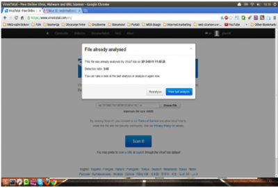 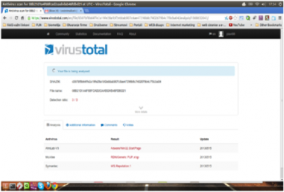
Prikaz rezultata
Rezultati se prikazuju u obliku tablice sa 46 redaka i 3 stupca. U prvom stupcu su navedeni nazivi antivirusnih software, u drugom stupcu rezultati u smislu da li je antivirusni program maliciozni kod detektirao kao opasnost ili nije, a ako je onda je u taj stupac napisana vrsta malicioznog koda koju antivirusni software prepoznao u tom malicioznom kodu. U trećem stupcu je naveden datum uploada malicioznog koda. U retcima su navedeni nazivi antivirusnih software čija je zadaća detekcija malicioznih kodova.
Spremanje rezultata
Rezultate smo spremali na način da smo kopirali tablicu rezultata sa Virus Total servisa u alat Libre Office. Alat je tablični kalkulator koji nam je kasnije omogućio daljnju obradu dobivenih podataka.
Brisanje testiranog malicioznog koda
Nakon što smo testirali jedan maliciozni kod isti smo nakon testiranja odmah obrisali iz vreće prikupljenih malicioznih kodova kako se nebi dogodilo da isti maliciozni kod testiramo više puta.
Obrada rezultata
Obrada rezultata je bila jednostavna. Pošto smo dobro formatirali rezultate u tablični kalkulator. Pomoću jednostavnih formula za sumiranje smo dobili ukupne rezultate. Koje smo kasnije prikazali na niže navedenim grafovima.
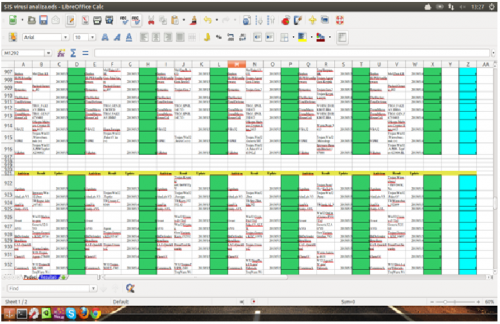 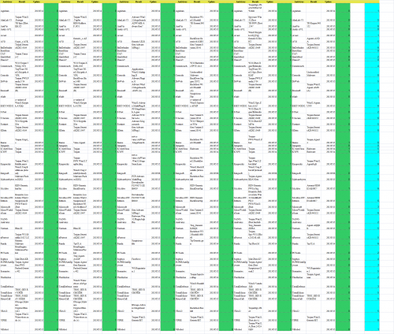
--Dorian Petrić 20:11, 31. svibnja 2013. (CEST)
Usporedba i komentari grafova
Testirali smo 150 različitih malicioznih kodova te prikupljali rezultate reagiranja na te maliciozne kodove svakog pojedinog antivirusnog programa. Zbrojili smo sve rezultate svakog antivirusnog programa i prikazali to pomoću grafa.
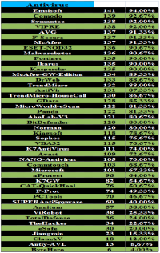

{kind=link}
{kind=link}
{kind=link}
{kind=link}
{kind=link}
{kind=link}
{kind=link}
{kind=link}
{kind=link}
{kind=link}
{kind=link}
{kind=link}
Napravili smo dva grafa, jedan veći koji obuhvaća sve antivirusne programe i njihov postotak detekcije te jedan manji graf u kojem je prikazano 10 najboljih antivirusnih programa, odnosno 12, zato jer tri antivirusna programa dijele 10 mjesto odnosno imaju identičan postotak detekcije malicioznih kodova. Iz grafova se može očitati da je po našem istraživanju najbolji antivirusni program Emsisoft s detekcijom od 94%. Nakon njega slijedi Comodo s detekcijom od 92,67%, Symantec s detekcijom od 92%, Vipre s detekcijom istom kao i antivirusni program Symantec, top 5 antivirusnih programa s najboljom detekcijom zatvaraju AVG, F-Secure i McAfee s detekcijom od 91,33%.
Analiza besplatnih antivirusnih rješenja namijenjenih osobnim korisnicima
Osim testa detekcije pomoću "Virus Total" servisa. Odlučili smo testirati besplatne inačice antivirusnih alata. U nastavku ćemo ukratko proći neka od najpoznatijih besplatnih antivirusnih rješenja koje se koriste u današnje vrijeme. Ukratko ću opisati svoja zapažanja od same instalacije alata te sam proces testiranja.
Za potrebe ovog rada provedeno je osnovno testiranje detekcije. Tako da smo sastavili "vreću" od 150 različitih oblika malicioznog koda, pri čemu je većina onih koji se mogu smatrati ozbiljnijom prijetnjom poput malvera, trojanaca, rootkita pa do adware-a i takozvanih "potencijalno opasnih aplikacija".
Testiranje je provedeno pomoću virtualnog računala i operacijskog sustava "Windows XP".
Važno je napomenuti da su testirani popularniji antivirusni alati koji imaju i takozvanu "real time" zaštitu, odnosno stalno nadziranje i testirani su neki koji u besplatnim verzijama nude samo skeniranje i uklanjanje malicioznog koda. Za svaki alat će biti napomenuto dali ima ili nema stalno nadziranje.
--Marko Havoić 01:37, 30. svibnja 2013. (CEST)
Opis procesa testiranja
Sam proces testiranja pojedinog alata se sastojao od sljedećih koraka:
1. Priprema virtualnog računala. "Čista" instalacija "Windows XP" operativnog sustava. Uz dodatak programa "Win.rar". Na desktopu je bila smještena "testna vreća" u komprimiranom obliku zaštićena lozinkom.
2.Preuzimanje antivirusnih alata sa službene stranica. Namjerno izbjegavanje komercijalnih rješenja.
3. Instalacija s osnovnim postavkama. Izbjegavanje dodatnih toolbara i alata ako su jasno istaknuti prilikom instalacije i ne zahtijevaju prilagođenu instalaciju.
4. Osvježavanje baze virusa na najnoviju dostupnu. Postavke alata su ostavljene na osnovnim tj. nisu ni dirane.
5. Pokušaj raspakiravanja "testne vreće" i praćenje rada antivirusa.
6. Skeniranje ne zahtjev mape s malicioznim kodom ako je ostalo datoteka u njoj.
7. Prikupljanje rezultata i pregled prepuštenih malicioznih datoteka.
NAPOMENA: Niže dobiveni rezultati ne trebaju se smatrati relevantnom ocjenom alata. Jer postupak testiranja ovakvih alata je vrlo složen i zahtjeva drugačije uvjete i sam pristup. Ovo testiranje je rađeno isključivo za potrebe ovog rada i služi u informativne svrhe. Za detaljnije informacije o testiranju antivirusnih rješenja možete posjetiti ovu stranicu i pročitati sljedeći dokument:
[ http://www.cert.hr/sites/default/files/CCERT-PUBDOC-2009-07-269.pdf (Dostupno 16.05.2013)]
--Marko Havoić 01:48, 30. svibnja 2013. (CEST)
Rezultati testiranja pojedinih programa
U nastavku je kratki opis instalacije, testiranja te rezultati testiranja svakog pojedinog programa. Ispod pojedinačnih rezultata za svaki program nalaze se zbirni rezultati prikazani pomoću tablice i grafikona.
AVG
Jedan od najpopularnijih alata u besplatnoj inačici. Samo preuzimanje alata sa službene stranice je bilo jednostavno. Isto tako sama instalacija je jednostavna. No klikom na "express install" odnosno automatsku instalaciju bez odabira dodatnih postavki, sam program u web preglednik integrira svoju alatnu traku. Osobno to ne volim, no može biti i korisno. Alat osim osnovne zaštite i skeniranja nudi i dodatne oblike zaštite. Više o njima možete pronaći na sljedećoj stranici:
[ http://download.cnet.com/AVG-AntiVirus-Free-2013/3000-2239_4-10320142.html (dostupno 18.05.2013)]
Proces raspakiravanja "testne vreće" je prošao bez reakcije programa. No samo skeniranje nakon toga je pokazalo kvalitetu alata. Program je prepoznao 133/150 potencijalnih prijetnji. Razvrstao ih u 2 kategorije i nakon toga ponudio koje akcije želimo raditi s njima. Odabrana je akcija brisanja te su datoteke uklonjene iz sustava. U vreći je preostalo 17/150 malicioznih kodova.
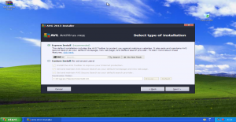 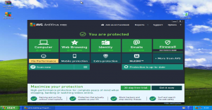 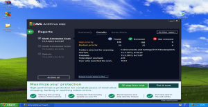
{kind=link}
{kind=link}
{kind=link}
Avast
Također jedan od popularnih alatu u svojoj besplatnoj verziji. Skidanje alata sa službenih stranica je jednostavno. Sam postupak instalacije također. Program u svojoj instalaciji automatski nudi instalaciju "Google Chrome" web preglednika koju je moguće izbjeći odabirom. Alat odmah po instaliranju pokreće automatsko inicijalno skeniranje sustava. Također kao i kod prošlog alata osim osnovne zaštite i skeniranja imamo dodatne mogućnosti više o njima možete saznati na sljedećoj stranici:
[ http://download.cnet.com/Avast-Free-Antivirus/3000-2239_4-10019223.html (dostupno 18.05.2013)]
U ovom slučaju odmah pri pokušaju raspakiravanja "testne vreće" alat automatski prepoznaje da se radi o malicioznim kodovima te miče većinu u karantenu i nudi nam da odaberemo željenu opciju. Kao i kod prethodnog odabrana je opcija brisanja. Pošto je ostalo programa u samoj testnoj datoteci pokrenuto je kao i kod prethodnog alata opcija skeniranja. Alat nakon toga prepoznaje još nekoliko prijetnji.
Na posljetku alat je maknuo 116/150 malicioznih kodova, odnosno u datoteci su preostala 34/150.
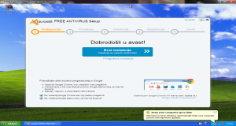 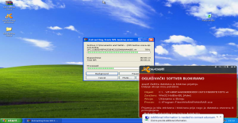
{kind=link}
{kind=link}
{kind=link}
Avira
Kao i prethodna 2 alata spada među najzastupljenije alate u besplatnoj verziji. Također nudi svoj toolbar koji se može maknuti prilikom instalacije. Preuzimanje i instalacija su jednostavni. Po završetku se pokreće automatsko skeniranje. Jedna od mana je pretjerano reklamiranje. Odmah prilikom završetka se prebacuje na službene web stranice i nudi dodatne proizvode. Također u besplatnoj verziji osim skeniranja i stalnog nadziranja nudi dodatne oblike zaštite. Više na sljedećoj adresi:
[ http://download.cnet.com/Avira-Free-Antivirus-2013/3000-2239_4-10322935.html (dostupno 18.05.2013)]
Odmah kod raspakiravanja alat skenira datoteku te prepoznaje da se radi o malicioznom kodu, automatski je u karantenu pobacao 134/150 malicioznih programa. Dodatnim skeniranjem prepoznaje još 2 prijetnje. Odabirom brisanja miče 136/150 prijetnji odnosno u testnoj datoteci ostaje 14/150 malicioznih kodova.
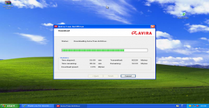 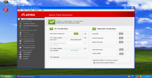 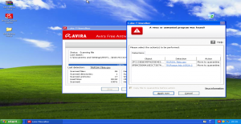
{kind=link}
{kind=link}
{kind=link}
Comodo
Comodo je isto među poznatijim besplatnim rješenjima. Sam program je malo drugačijeg koncepta od prethodnih. Naime dobijemo više aplikacija kao što su Dragon browser, sandbox, GeekBudy i dr. Instalacija je jednostavna i na kraju instalacije traži ponovno pokretanje sustava. Više informacija o samom alatu možete pronaći ovdje:
[ http://www.comodo.com/home/internet-security/antivirus.php? (Dostupno 15.05.2013)]
Kod samog testiranja naišao sam na problem jer mi je alat sam program WinRAR.exe iz nekog razloga stavio u sandbox. Kad smo oslobodili WinRAR počelo je raspakiravanje "vreće". Naizgled je Comodo dopustio raspakiravanje no u pozadini je automatski većinu programa s malicioznim kodom smjestio u karantenu te nudio njihovo brisanje. U datoteci je ostalo dvadesetak programa, a nakon samog skeniranja uklonio je 141/150 programa. Dakle u datoteci je ostalo samo 9/150 malicioznih kodova. Te je vidljivo da iako je „naporan“ ima jako dobru detekciju.
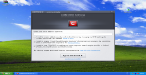 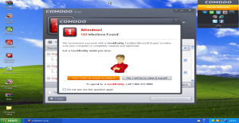
{kind=link}
{kind=link}
{kind=link}
Bitdefender
Nudi besplatnu verziju svog antivirusnog alata. Zauzima više radne memorije te je sama instalacija malo sporija u odnosu na prethodno navedene alate. Unutar instalacije nema "dosadnih toolbara" . Nakon instalacije pokreće se inicijalno skeniranje. Više informacija o samome alatu možete pronaći na sljedećim stranicama:
[ http://www.bitdefender.com/solutions/free.html (Dostupno 15.05.2013.)]
Alat je reagirao odmah po pokušaju raspakiravanja "vreće" te je prebacio veći dio u karantenu, nakon skeniranja ukupno je prebačeno 129/150 malicioznih programa u karantenu. Program je ponudio brisanje istih te je nakon brisanja obavezno ponovno pokretanje sustava kako bi se prijetnje u potpunosti uklonile. Po završetku u datoteci je ostalo 21/150 malicioznih kodova.
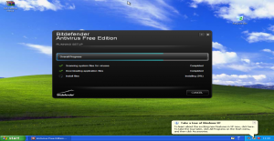 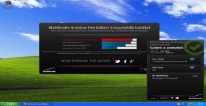 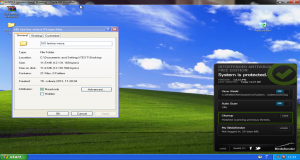
{kind=link}
{kind=link}
{kind=link}
Malwarebytes
Ovaj alat je na dobrome glasu po svojoj detekciji. Sam alat u besplatnoj verziji nema stalne zaštite no nudi skener i uklanjanje malicioznog koda. Stoga je tako i testiran. Alat je opravdao svoju reputaciju te je nakon skeniranja i uklanjanja u datoteci ostalo svega 16/150 malicioznih kodova.
Detaljnije o alatu možete pronaći na sljedećim stranicama:
[ http://www.malwarebytes.org/ (Dostupno 15.05.2013)]
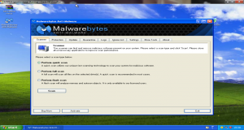 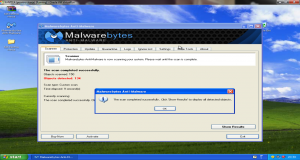 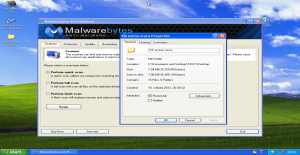
{kind=link}
{kind=link}
{kind=link}
Microsoft security essentials
Jednostavna instalacija. Inicijalno skeniranje. No kod samog raspakiravanja usporava sustav i pronalazi svega 5 prijetnji. Nakon skeniranja i restarta uklanja svega 67/150 prijetnji. Dakle u datoteci ostaje 83/150 malicioznih kodova.
Detaljnije informacije o proizvodu možete naći na službenim stranicama:
[ http://windows.microsoft.com/hr-hr/windows/security-essentials-product-information#tabs1=overview (Dostupno 15.05.2013)]
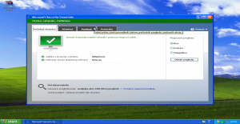 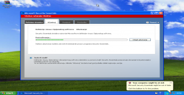 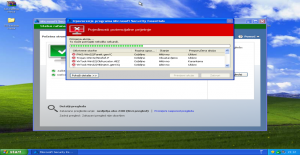
{kind=link}
{kind=link}
{kind=link}
Usporedba rezultata
Gledajući niže navedenu tablicu i grafikon možete vidjeti usporedni prikaz te poredak antivirusnih softvera prema detekciji testnih malicioznih kodova.
{kind=link}
{kind=link}
Iz tablice i grafa je vidljivo da se po detekciji ističe Comodo, iza njega su Avira, Malwarebytes i Avg s vrlo malim međusobnim razlikama. Slijedi ih BitDefender te Avast koji po nama ima lošije rezultate od očekivanog. Na začelju je Microsoftov alat s velikim zaostatkom za ostalima.
--Marko Havoić 20:13, 31. svibnja 2013. (CEST)
Zaključak
U ovome radu smo napravili analizu detekcije različitih skenera od različitih tvrtki. Napravili smo i kraću analizu besplatnih antivirusnih rješenja. Vidljivo je da su rezultati različiti. Mi smo se u našem radu bazirali na samu detekciju, no postoje i različite druge karakteristike antivirusnih alata koje bi trebalo uzeti u obzir. U radu je naveden dokument koji o tome govori detaljnije. Rezultati koje smo dobili Vam mogu otprilike pokazati kako danas stoje stvari i koji alati su bolji u detekciji, a koji ipak zaostaju.
Mi nećemo preporučiti niti jedan od njih. Ima dosta kvalitetnih alata i na korisniku je da sam odabere koji njemu odgovara. Jedino preporučujemo da izbjegavate one koji imaju vidljivo loše rezultate.
Korišteni materijali i literatura
[ https://www.virustotal.com/hr/ (Dostupno 18.05.2013)]
[ http://www.cert.hr/sites/default/files/CCERT-PUBDOC-2009-07-269.pdf (Dostupno 16.05.2013)]
[ http://download.cnet.com/AVG-AntiVirus-Free-2013/3000-2239_4-10320142.html (dostupno 18.05.2013)]
[ http://download.cnet.com/Avast-Free-Antivirus/3000-2239_4-10019223.html (dostupno 18.05.2013)]
[ http://download.cnet.com/Avira-Free-Antivirus-2013/3000-2239_4-10322935.html (dostupno 18.05.2013)]
[ http://www.comodo.com/home/internet-security/antivirus.php? (Dostupno 15.05.2013)]
[ http://www.bitdefender.com/solutions/free.html (Dostupno 15.05.2013.)]
[ http://www.malwarebytes.org/ (Dostupno 15.05.2013)]
[ http://windows.microsoft.com/hr-hr/windows/security-essentials-product-information#tabs1=overview (Dostupno 15.05.2013)]
Dodatno:
(linkovi na ostale alate korištene u ovome projektu)
[ https://hr.wikipedia.org/wiki/Linux (Dostupno 15.05.2013)]
[ http://www.ubuntu.com/ (Dostupno 15.05.2013)]
[ https://www.libreoffice.org/download (Dostupno 15.05.2013)]
[ https://www.virtualbox.org/ (Dostupno 15.05.2013)]
Napomena: Izvor malicioznih kodova i "vreća" malicioznih kodova zbog sigurnosti nije objavljena :)